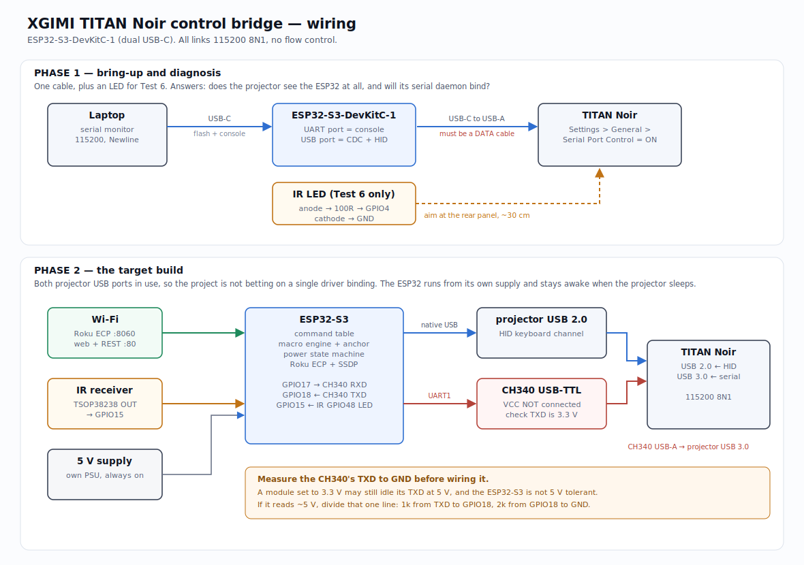

An ESP32-S3 that gives the projector the discrete control it doesn't ship with.
0x07, which drives the on-screen menu
blind for the features the serial set doesn't expose.
tools/flash.sh p1 # build, upload, open the monitor
# in the monitor — 115200, line ending = Newline
k down # menu cursor moves? → USB enumeration works
temp # bytes come back? → serial is bound, you're done
poll 5 # leave running, then put the projector in standby
tools/flash.sh p2 # once you know which channel wontemp returns bytes.
Everything after that is software you can write at leisure.

Both sketches are pure arduino-esp32 with no external libraries, so there is nothing to install before flashing. Verified warning-free on arduino-esp32 2.0.17 and 3.3.11, across every configuration permutation.
| titan_bridge_p1 | titan_bridge_p2 | |
|---|---|---|
| Purpose | answer the Day 1 questions | run the theatre |
| Flash used | 29% | 54% (Minimal SPIFFS) |
| Serial over native USB CDC | yes | yes |
| Serial over UART1 → USB-TTL | one #define | simultaneously |
| USB HID keyboard | yes | yes |
| IR transmit (Test 6 sweep) | yes | — |
| IR receive | — | yes |
| USB bus-event logging | yes | — |
| Parameter sweeping | yes | yes |
| Macro engine | — | yes |
| Power state machine | — | yes |
| Roku ECP + SSDP | — | yes |
| Web UI + REST API | — | yes |
| Wi-Fi provisioning + OTA | — | yes |
| Setting | Value | Why |
|---|---|---|
| Board | ESP32S3 Dev Module | |
| USB Mode | USB-OTG (TinyUSB) | required for the HID keyboard |
| USB CDC On Boot | Disabled | keeps Serial on UART0 as the console |
| Upload Mode | UART0 / Hardware CDC | flash over UART while the native port is a keyboard |
| Partition Scheme | Minimal SPIFFS (1.9MB APP with OTA) | p2 needs the room |
back, back, back, settings —
then count from there. Without the anchor, one desynced press sends the rest of the
sequence somewhere random.Frame: 2A 2A <len> <instr> <params…> <checksum>,
where len is 1 plus the parameter count and the checksum is everything after
the header, mod 256.
hdmi1 hdmi2 hdmi3? usbsrc source select
vivid movie imax perf tvmode sport filmmaker
b1 … b10 brightness
power source up down left right ok back setting home
volup voldn autofocus manfocus mute
wake standby wake, "wakeup" in ASCII
blank unblank screen off / on
hrroff hrrbasic hrrmax high refresh rate
temp temperature status — the only feedbackThe hardware has to answer these. They're listed so that finding one out is progress rather than a surprise.
| Question | Why it's open | Settled by |
|---|---|---|
| Does CDC bind? | The projector's daemon almost certainly wants /dev/ttyUSB*, which
needs a real USB-serial chip; the ESP32 presents as /dev/ttyACM*. |
Test 2 |
| Do the USB ports stay powered in standby? | If not, wake can never reach the projector and power-on has to come
from a smart plug or HDMI-CEC. |
Test 5 — run it early |
Does HDMI3 exist as parameter 03? |
The document lists two HDMI inputs on a three-HDMI projector. | Test 4 |
High-refresh "extreme": 01 or 02? |
The document prints 01 and gives a checksum only reachable with
02. The firmware follows the checksum. |
Test 3 |
| Does SofaBaton's Roku profile surface the TV-only keys? | The bridge presents is-tv=true specifically to find out. |
Pairing the hub |